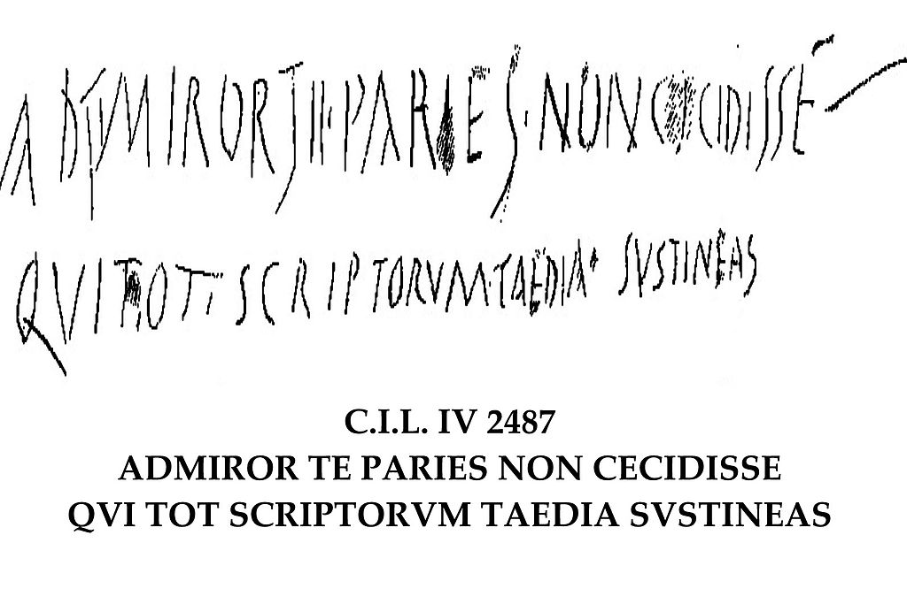
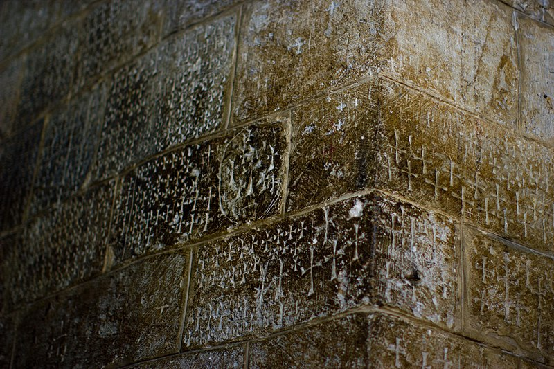

The origin of Graffiti
Graffiti has existed since ancient times, with examples dating back to Ancient Egypt, Ancient Greece and the Roman Empire.
In the 1st century BCE, Romans regularly inscribed messages on public walls, while oceans away, Mayans were scratching drawings onto their surfaces.
In Pompeii, ordinary citizens regularly marked public walls with magic spells, prose about unrequited love, political campaign slogans, and even messages to champion their favorite gladiators.
It is applied in art history to works of art produced by scratching a design into a surface.
This technique was primarly used by potters who would glaze their wares and then scratch a design into it.
In ancient times graffiti were carved on walls with a sharp object, although sometimes chalk or coal were used.
Graffiti, known as Tacherons, were frequently scratched on Romanesque scandinavian church walls.
When Renaissance artists such as Raphael, Michelangelo or Pinturrichio descended into the ruins of Nero's Domus Aurea, they carved or painted their names and returned to initiate the grottesche style of decoration.
There are also examples of graffiti occuring in American history, such as Independence Rock, a national landmark along the Oregon Trail.
Later, French soldiers carved their names on monuments during the Napoleonic campaign of Egypt in the 1790s.
Lord Byron's survives on one of the columns of the Temple of Poseidon at Cape Sounion in Attica, Greece.
 |
 |  |
| Ancient Pompeii graffito caricature of a politician | Ironic wall inscription commenting on boring graffiti | Crusader graffiti in the Church of the Holy Sepulchre |
Differences
So graffiti in the classical world had different connotations than they carry in today's society.
Ancient graffiti displayed phrases of love declarations, political rhetoric, and simple words of thought, compared to today's popular messages of social and political ideals.